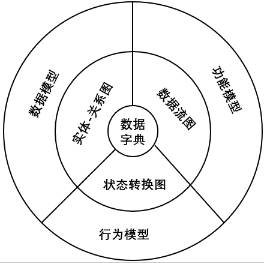
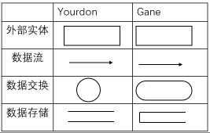

软件的生命周期： 1.可行性研究 2.需求分析 3.软件设计 4.软件实现（编码） 5.软件测试 6.产品验收和交付（软件维护） ----------------------------------------------------------------------------------------------------------- 可行性研究 可行性研究的与项目立项的关系： 可行性研究属于项目论证的环节（项目发起→项目论证→项目开发计划→项目审核→项目立项）。 项目发起：发起人要递交书面材料（项目发起文件/项目建议书）。 项目论证（可行性研究）：确定问题是否值得解决和能够解决。 项目开发计划：是一种管理性文档。对开发的各个环节进行说明指引。 可行性研究的任务： 1.战略可行性：整体、方向。 2.操作可行性：上线后是否有人维护？用户是否抵触？ 3.计划可行性：时间够不够？ 4.技术可行性：软硬件，技术人员水平。 技术可行性的地位：是系统开发中难度最大的工作，是可行性研究的关键 5.社会可行性：法律/合同。 6.市场可行性：竞争对手、发展趋势、消费群体。 7.经济可行性：成本-效益。 项目的成本组成： 1.购置并安装软硬件及有关设备费用 2.项目开发费用 3.软硬件系统安装、运行、维护费用 4.人员的培训费用 成本估算技术： 1.代码行技术 2.任务分解技术 货币的时间价值：按年利率折损计算 投资回收期：回本的时间 纯收入：全部收入 8.风险可行性：意外。 可行性研究的步骤： 1.明确系统目标 2.分析研究现行系统 3.设计新系统的高层逻辑模型 4.获得并比较可行的方案 5.撰写可行性研究报告 ----------------------------------------------------------------------------------------------------------- 需求分析 需求分析的内容： 1.分析系统运行的环境要求（软硬件环境）。 2.确定系统的功能性需求（能提供的服务，能做哪些功能？）和非功能性需求（性能，可靠性等）。 需求分析的原则： 1.需求分析是一个过程，贯穿软件生命周期。 2.需求分析需要迭代，适应变化。 3.需求的表达应该具体、清晰。 需求分析的两个任务：建模阶段和描述阶段。 需求分析的步骤： 1.需求获取 需求获取的形式：问卷调查、访谈、实地操作、建立原型。 问卷调查：让用户填写问卷，问卷的可选答案不能太局限，以免限制用户思维。 访谈：和客户代表座谈，问的问题应该开放而非封闭。 实地操作：让开发人员以用户身份参与实践。 建立原型：建立个模型后再在模型上修改。 2.分析建模：建立各种角度的分析模型，如数据流图、实体关系图、状态转换图、控制流图、用例图等。 3.需求描述：主要任务就是编制需求分析阶段的文档，复杂的软件一般为三个文档，即系统定义文档（用户需求报告）、系统需求文档（系统需求规格说明书）、软件需求文档（软件需求规格说明书），简单的软件只要软件需求文档。 4.需求验证 需求管理： 为什么要有需求管理？ 更好地进行需求分析和记录需求结果。 需求管理涉及的问题： 1.识别、分类、组织需求，并建立需求文档。 2.应对需求的变化。 3.需求的可追踪性，即带有维护需求之间以及与系统的其他制品之间依赖关系的过程。 需求分析的方法： 1.功能分解法 2.结构化分析法 【1】什么是结构化分析方法？ 含义：一种考虑数据和处理的、面向数据流的需求分析方法。 核心思想：自顶向下，由外到内，逐层分解。 过程： 1）建立当前系统的“具体模型”。 2）抽象当前系统的逻辑模型。 3）建立目标系统的逻辑模型。 4）人机界面或其他问题。 【2】结构化分析原则 1）必须定义软件应完成的功能（指出数据在软件系统中移动时怎样变换，以及描绘变换数据流的功能和子功能），即建立功能模型。 2）必须理解和表示问题的信息域（描绘数据对象之间的关系），即建立数据模型。 3）必须表示作为外部事件结果的软件行为（指明作为外部事件结果的系统行为），即建立行为模型。 4）必须对描述功能、信息和行为的模型进行分解，用层次的方式展示细节。 5）分析过程应该从要素信息移向实现细节。 【3】结构化分析方法的模型  1）数据流图（DFD图）： ▶作用：用于功能建模。 ▶符号：  2）实体-关系图（E-R图）： ▶作用：用于数据建模。 3）状态转换图： ▶作用：用于行为建模。 4）数据字典： 3.信息建模法 4.面向对象的分析方法